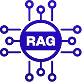
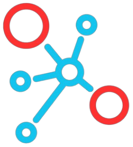
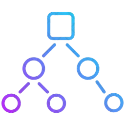
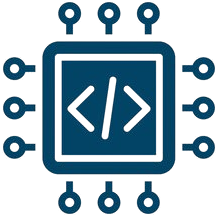

Languages
 Python
Python C++
C++ JavaScript
JavaScript
Available for AI / ML engineering roles
I am a |
I’m an AI/ML Engineer and Researcher with an MS in Artificial Intelligence from FAST-NUCES, passionate about building intelligent systems and solving real-world problems. My work spans Deep Learning, Computer Vision, Medical Image Analysis, Generative AI, NLP, and Agentic AI. I have worked on medical imaging, image segmentation, explainable AI, and generative models, alongside developing end-to-end machine learning and AI applications. I enjoy exploring new ideas, experimenting with AI, and turning research into solutions that work in the real world
02 · Skills

LangChain03 · Experience
Artificial Intelligence Diagnostics Lab
Skills:

Questlab
Skills:
Artificial Intelligence Diagnostics Lab
Skills:
04 · Projects
An AI-powered no-code platform that automates the end-to-end machine learning workflow. Users can upload a dataset and let the platform automatically handle data profiling, EDA, data cleaning, feature engineering, model training, evaluation, and report generation. Built using LangGraph agents that work together to streamline the entire ML process, with flexible integration of leading LLMs including Groq, Gemini, OpenAI, and OpenRouter.
An AI-powered study assistant built for CS and Data Science students. NeuroTutor helps students understand concepts, ask questions, and practice Python in one place, with code that can be written and executed directly in the browser. It uses Google Gemini for AI-powered responses, Pyodide for in-browser Python execution, and SSE for real-time responses.
A desktop GIS application for viewing GeoTIFF satellite imagery and interacting with geospatial data. Built with Python, GDAL, and PyQt5, it supports image zooming and panning, displays pixel coordinates, converts pixel locations to latitude/longitude, and allows users to mark specific geographic locations directly on the image.
An NLP-based tool that reads financial tweets and determines whether the sentiment is Bullish, Bearish, or Neutral. Fine-tuned with DistilBERT and paired with a real-time interface for instant sentiment predictions.
A conversational AI built to explore Pakistan’s history, economy, and geography through a custom knowledge base. It uses Retrieval-Augmented Generation (RAG) to find relevant information before generating an answer, helping keep responses grounded in the provided data. Built with LangChain, Hugging Face Transformers, and Chainlit.

RAGA computer vision system that detects liquid levels in containers in real time. Trained YOLOv10 on a custom dataset and optimised it for accurate and fast detection in industrial settings.
Fine-tuned a pre-trained Vision Transformer for binary autism classification using PyTorch Lightning. Full evaluation with held-out test set accuracy and F1-score reporting.
A desktop image annotation application built with Python and Tkinter for creating and managing computer vision datasets. It provides multiple annotation tools, batch image handling, precise editing, project management, and exports to COCO, Pascal VOC, and JSON formats.
Turned thousands of Alexa reviews into actionable sentiment insights. The project tackles imbalanced customer feedback using SMOTE and upsampling, then puts six ML classifiers head-to-head to find the strongest performer. Random Forest came out on top.

SMOTE
Random ForestRetrieval-Augmented Generation system for fashion recommendation. Combines vector similarity search with LLM generation to provide personalised style advice from a curated knowledge base.

EmbeddingsAn AI-based medical question-answering system that combines Retrieval-Augmented Generation (RAG) with a curated medical knowledge base. It retrieves relevant passages from medical reference material and uses them to generate accurate, context-aware responses grounded in the source content.
An AI-based legal question-answering system that helps users find relevant information across multiple legal PDF documents. The chatbot retrieves relevant content from the documents and uses it to generate context-aware responses, making complex legal information easier to explore and understand.
Computer Vision
Compared VGG, ResNet50, and MobileNet with a custom CNN to evaluate how different architectures perform on image classification tasks. The project focused on accuracy, training efficiency, and generalization, providing a practical comparison between transfer learning and training a CNN from scratch.
05 · Education
National University of Computer & Emerging Sciences - FAST Islamabad
International Islamic University, Islamabad
06 · Publications & Research

Diagnostics MDPI
Contact